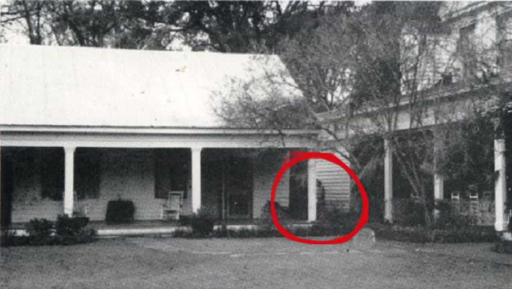
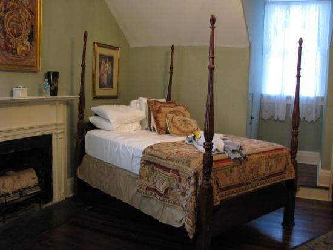
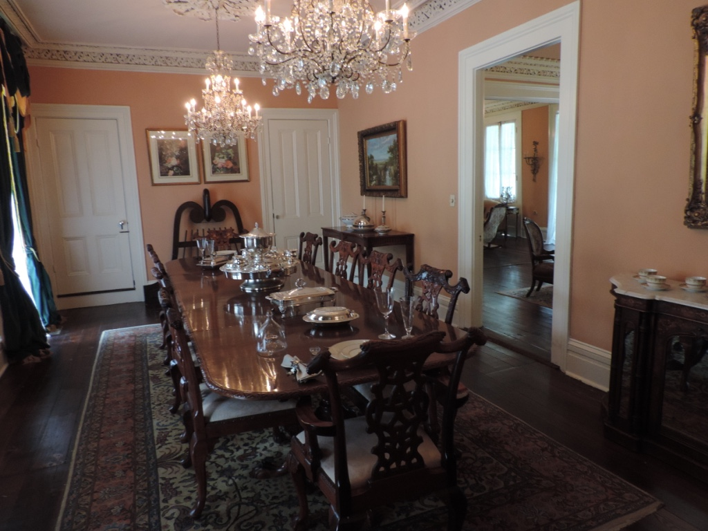
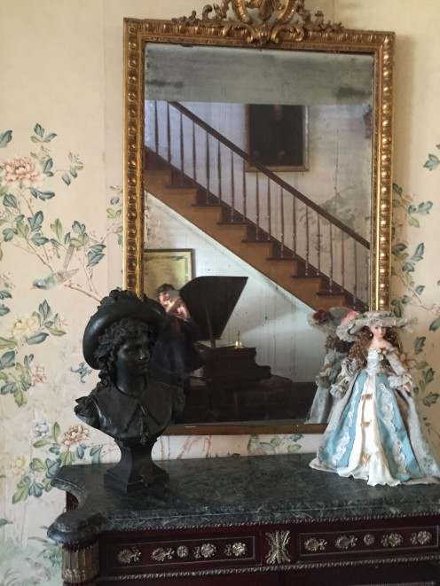

Want to get scared? Come down to Myrtles Plantation for haunted atttractions and creepy legends that will give you nightmares.
The Legend of Chloe
The Myrtles is a haunted house that is said to have had 10 murders taken place there. One of the most famous stories is the legend of Chloe. Back then, at the time, Myrtles Plantation was owned by Judge Clark Woodruffe and his wife, Sara Matilda. Even though the judge was well respected in his community, no one knew he was a womanizer. The judge would always sneak around and have relations with his female slaves. He had a target of his advances though. His target was a slave named Cloe. Chloe did not like the judge having his way with her, but she knew that if she didn't follow through the judge would send her back to the toil with the other slaves. Once the judge found a knew interest, Chloe began to worry she would be sent back to the fields so she started to eavesdrop to see if her fear was true. When the judge caught her, he sliced off her ear with anger. Cloe knew she had to prove her trust so when she was in charge of the oldest daughter's birhtday party, she made a cake with a plant that contained a little bit of poison in it as an ingredient. She thought that if she nursed them back to health she would be trusted again. The plan went wrong and the other slaves began to worry that the judge would take his anger on Cloe out on them. The slaves decided to grab Cloe one night while she was asleep and hand her from an oak tree. When she died they cut her down, weighted her body with rocks, and tossed her into the Mississippi River. The house was then used as a tour atrraction, but the people taking the tour were not alone. A person took a picture and in the background was a shadow of Cloe. Chloe still haunts that house till this day. Want to hear more about the legend of Chloe? Click the link below.
The Slave Girl Chloe

This is a picture of Chloe's shadow at Myrtles Plantation.
Come down to Myrtles Plantation if you want to know why it has been named "One of Americas most haunted homes." Open for tours 7 days a week. There are tons of mysteries and nightmares that await your arrival! Myrtles Plantation offers the following:
Day Tours
Evening Tours
Private Tours
Baton Rouge Pickup Tour
Gift Cards
Bed and Breakfast

This is a picture of the Ruffin Stirling Room at Myrtles Plantation.

This is a picture of the Dining Room at Myrtles Plantation.

This is a picture of the famous mirror at Myrtles Plantation.
Things to know about the tours and more:
The day tour is offered 7 days a week from 9:00am-4:30pm. Focuses on the history, mystery, and Intrigue of the plantation. The tour is about 45 minutes. 15 dollars for adults and 12 dollars for children under the age 12. Tax not included.
The evening mystery tours are only on Fridays and Saturdays at 6:00, 7:00, and 8:00pm. There is limited space on this tour so reservations are recommended. The tours are 15 dollars a guest and are about 1 hour each.
The private tours are 7 days a week. It is perfect for private groups, birthday parties, or any other special event. This tour is 99 dollars flat rate, so in all cases will it be 99 dollars, plus 15 dollars per guest. You must have a reservation, they are required.
The baton rouge pickup tours offers transportation from Red Stick Adventures. They will pick you up at Baton Rouge hotels and return you safely after visiting Myrtles Plantation. It is available every Tuesday and Thursday. It is 55 dollars for adults and 45 dollars for children under the age of 12.
Get the giftcards to let people know why Myrtles Plantation is "One of Americas Most Haunted Homes."
Includes complimentary dailt mystery tours and breakfast. It has 12 different accommodations to comfortably meet the needs of its guests. It is a range between 175-400 dollars per night and will allow 2-6 guests. Check-ins are no later than 3:00pm. Feel free to arrive early to explore the grounds, gift shops, and relax on the courtyard under the canopy of colossal crepe myrtle trees.